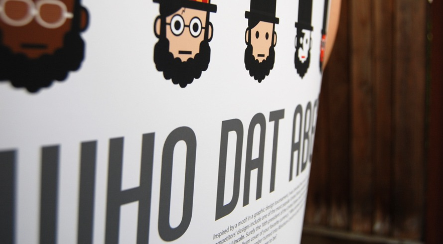
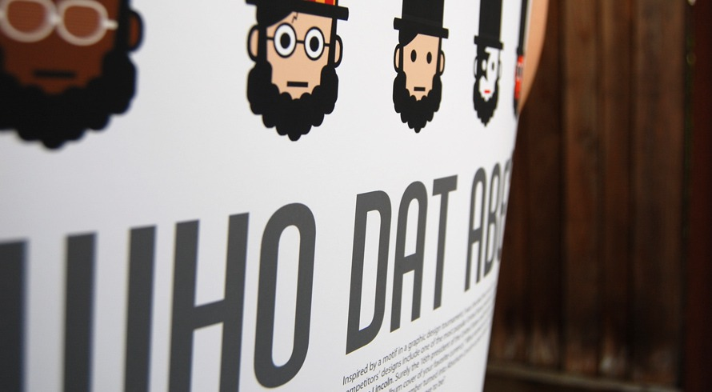
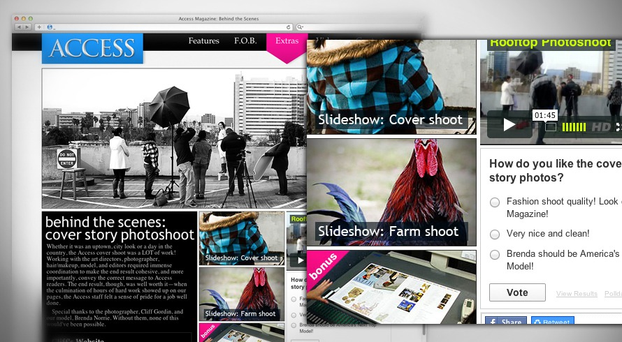
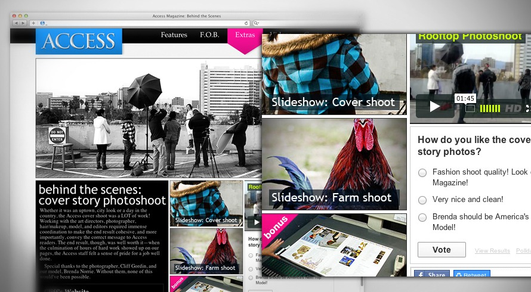

Showcase 1 of 5

Sustainability
concept map / print designIn this assignment, a infographic was created to give the uninformed a brief and general overview in regards to sustainability in homes/architecture. Information hierarchy is differenced with font sizes, font weights, colors, and straight & dotted lines. 11 x 17 inches.
 



 
